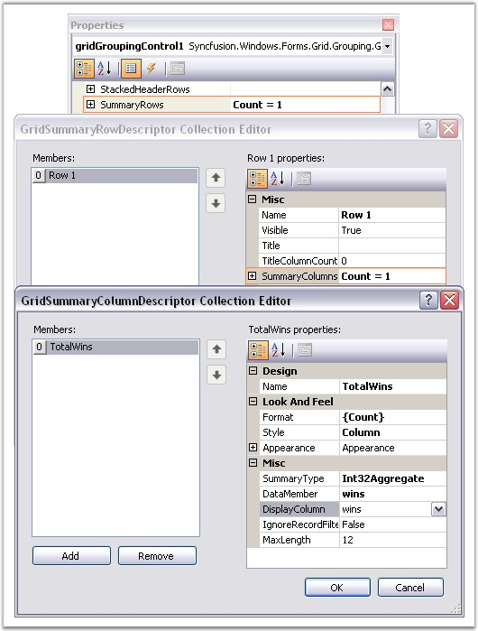
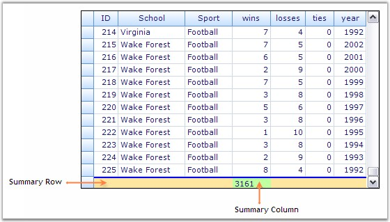
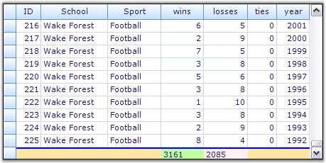
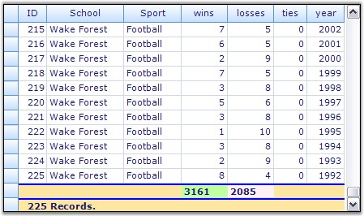
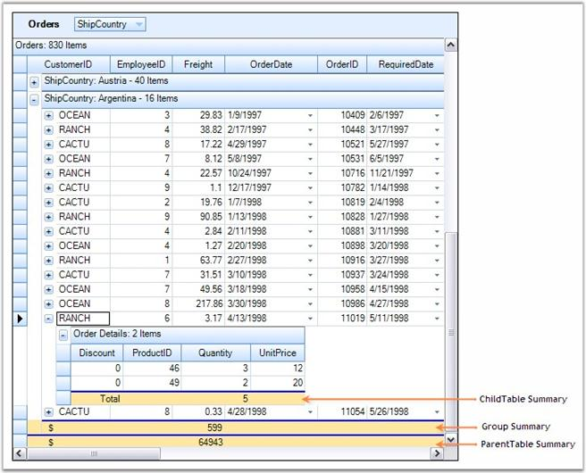
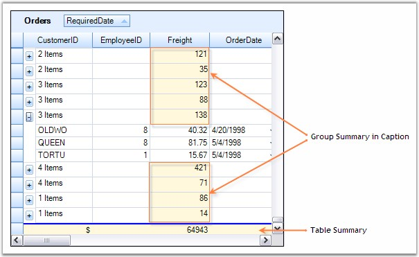
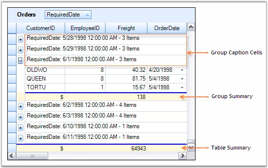
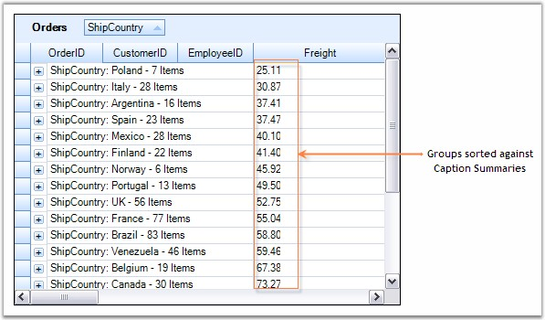

Grid Grouping control allows you to display summaries for each group. Summaries lets you derive additional information from your data like averages, maximums, summations, count, and so on.
For instance, you can get number of records or maximum value, and so on. They display the calculation results in separate display rows. The calculation of summary values is very fast with only O(log2 n) operations (n being the number of records in the table), because of the highly optimized balanced tree structures used in the grouping engine.
The grouping grid provides the following built-in summary types.
· Int32Aggregate, DoubleAggregate (Count, Min, Max, Sum)
· StringAggregate (MaxLength, Count)
· Count
· DistinctCount (Count, Values array)
· Vector (Values)
· DoubleVector (statistical methods: Median, Min, Max, 25% Quartile, 75% Quartile)
· Custom (Custom Summaries)
The engine supports summaries that operate on vectors such as Distinct Count, Median, 25% and 75% Quartile. Users may also easily add custom summaries.
SummaryRows Collection
The TableDescriptor.SummaryRows manages a collection of summary rows for the grid table. This collection implements an abstracted view to summaries which lets users define where to display the summary in the grid. Behind the scenes, the GridEngine adds many more hidden summaries to the Summaries collection. Examples for such hidden summaries are: maximum width for contents of a cell, filter bar choices, and display entries of a ForeignKeyKeyWords relation. You can have summaries for the individual columns (SummaryColumns) which can then be combined into a single Summary Row for display.
It is the SummaryDescriptorCollection that manages the summaries for a given table containing one entry for each summary. Each SummaryDescriptor in this collection has a MappingName that identifies a FieldDescriptor for which summaries should be calculated for, and a SummaryType property that defines the type of calculations to be performed. Possible options for SummaryType are: Count, BooleanAggregate, ByteAggregate, CharAggregate, DistinctCount, DoubleAggregate, Int32Aggregate, MaxLength, StringAggregate, Vector, DoubleVector, and Custom. By default, a SummaryDescriptor ignores the records that do not satisfy a filter criteria. This behavior can be changed with the IgnoreRecordFilterCriteria flag.
Summaries Through Designer
Summaries can be set at design time itself through the property window of the grid grouping control. In the property window, the SummaryRows under the TableDescriptor node will let you manage the summaries for a grouping grid. Accessing the SummaryRows property will open the GridSummaryRowDescriptor collection editor. The editor contains a list of properties such as Title, SummaryColumn, Appearance, etc. that allows you to define the summaries for the desired columns and to control the appearance of these summaries.

Figure 288: Property Settings to create a Summary for "Wins" Column
Through Code
This example shows a grouping grid bound with a Statistics table whose columns are ID, School, Sport, wins, losses, ties and year. Follow the steps below to create a summary for wins column that displays the sum of wins's values.
1. Setup a SummaryColumn by instantiating GridSummaryColumnDescriptor specifying the SummaryType and format.
|
[C#]
GridSummaryColumnDescriptor scd = new GridSummaryColumnDescriptor(); scd.Appearance.AnySummaryCell.Interior = new BrushInfo(Color.FromArgb(192, 255, 162)); scd.DataMember = "wins"; scd.Format = "{Sum}"; scd.Name = "TotalWins"; scd.SummaryType = SummaryType.Int32Aggregate; |
|
[VB.NET]
Dim scd As GridSummaryColumnDescriptor = New GridSummaryColumnDescriptor() scd.Appearance.AnySummaryCell.Interior = New BrushInfo(Color.FromArgb(192, 255, 162)) scd.DataMember = "wins" scd.Format = "{Sum}" scd.Name = "TotalWins" scd.SummaryType = SummaryType.Int32Aggregate |
2. Define a SummaryRow and add the SummaryColumn into it.
|
[C#]
GridSummaryRowDescriptor srd = new GridSummaryRowDescriptor(); srd.SummaryColumns.Add(scd); srd.Appearance.AnySummaryCell.Interior = new BrushInfo(Color.FromArgb(255, 231, 162)); |
|
[VB.NET]
Dim srd As GridSummaryRowDescriptor = New GridSummaryRowDescriptor() srd.SummaryColumns.Add(scd) srd.Appearance.AnySummaryCell.Interior = new BrushInfo(Color.FromArgb(255, 231, 162)) |
3. Finally add the Summary Row into the grouping grid.
|
[C#]
this.gridGroupingControl1.TableDescriptor.SummaryRows.Add(srd); |
|
[VB.NET]
Me.gridGroupingControl1.TableDescriptor.SummaryRows.Add(srd) |
4. Run the sample. The grid will look like this.

Figure 289: Summary created Through Code for "Wins" Column
 Note: For more details, refer the following
browser sample:
Note: For more details, refer the following
browser sample:
<Install Location>\Syncfusion\EssentialStudio\[Version Number]\Windows\Grid.Grouping.Windows\Samples\2.0\Calculate Summary\Summary Tutorial
In the previous chapter, we have learnt how to create simple summaries for a grid table. This chapter will explore the summaries into one more level to discuss the different forms of summaries. It is possible to have multiple summary rows for a single data table. We can define a summary for each group and also for each table when nested tables are used.
Multicolumn Summaries
A Summary Row can have any number of summary columns. To display summaries for more than one field, you must first create the summary columns for the desired fields. Then add those summary columns into a summary row. The code given below illustrates this.
|
[C#]
GridSummaryColumnDescriptor scd1 = new GridSummaryColumnDescriptor("Wins", SummaryType.Int32Aggregate, "wins", "{Sum}"); scd1.Appearance.AnySummaryCell.Interior = new BrushInfo(Color.FromArgb(192, 255, 162));
GridSummaryColumnDescriptor scd2 = new GridSummaryColumnDescriptor("Losses", SummaryType.Int32Aggregate, "losses", "{Sum}"); scd2.Appearance.AnySummaryCell.Interior = new BrushInfo(Color.LavenderBlush);
GridSummaryRowDescriptor srd = new GridSummaryRowDescriptor(); srd.SummaryColumns.AddRange(new GridSummaryColumnDescriptor[] { scd1, scd2 }); srd.Appearance.AnySummaryCell.Interior = new BrushInfo(Color.FromArgb(255, 231, 162));
this.gridGroupingControl1.TableDescriptor.SummaryRows.Add(srd); |
|
[VB.NET]
Dim scd1 As GridSummaryColumnDescriptor = New GridSummaryColumnDescriptor("Wins", SummaryType.Int32Aggregate, "wins", "{Sum}") scd1.Appearance.AnySummaryCell.Interior = New BrushInfo(Color.FromArgb(192, 255, 162))
Dim scd2 As GridSummaryColumnDescriptor = New GridSummaryColumnDescriptor("Losses", SummaryType.Int32Aggregate, "losses", "{Sum}") scd2.Appearance.AnySummaryCell.Interior = New BrushInfo(Color.LavenderBlush)
Dim srd As GridSummaryRowDescriptor = New GridSummaryRowDescriptor() srd.SummaryColumns.AddRange(New GridSummaryColumnDescriptor() {scd1, scd2}) srd.Appearance.AnySummaryCell.Interior = New BrushInfo(Color.FromArgb(255, 231, 162))
Me.gridGroupingControl1.TableDescriptor.SummaryRows.Add(srd) |
Here is a sample screenshot displaying the summaries for the columns wins and losses.

Figure 290: Multi Column Summaries
Multi Row Summaries
Grouping Grid allows you to have summaries for more than one row. It is achieved by defining a required number of summary row descriptors. Each of the summary rows can have its own format for calculating the summaries. Here is an example that shows how to add two different summary rows for a grid table.
|
[C#]
GridSummaryColumnDescriptor scd1 = new GridSummaryColumnDescriptor("Wins", SummaryType.Int32Aggregate, "wins", "{Sum}"); scd1.Appearance.AnySummaryCell.Interior = new BrushInfo(Color.FromArgb(192, 255, 162));
GridSummaryColumnDescriptor scd2 = new GridSummaryColumnDescriptor("Losses", SummaryType.Int32Aggregate, "losses", "{Sum}"); scd2.Appearance.AnySummaryCell.Interior = new BrushInfo(Color.LavenderBlush);
GridSummaryRowDescriptor srd = new GridSummaryRowDescriptor(); srd.SummaryColumns.AddRange(new GridSummaryColumnDescriptor[] { scd1, scd2 }); srd.Appearance.AnySummaryCell.Interior = new BrushInfo(Color.FromArgb(255, 231, 162));
GridSummaryColumnDescriptor scd3 = new GridSummaryColumnDescriptor("Total", SummaryType.Count, "{Count} Records."); GridSummaryRowDescriptor srd = new GridSummaryRowDescriptor("Row2", scd3); srd2.Appearance.AnySummaryCell.Interior = new BrushInfo(Color.FromArgb(255, 231, 162));
this.gridGroupingControl1.TableDescriptor.SummaryRows.AddRange(new GridSummaryRowDescriptor[] { srd1, srd2 }); |
|
[VB.NET]
Dim scd1 As GridSummaryColumnDescriptor = New GridSummaryColumnDescriptor("Wins", SummaryType.Int32Aggregate, "wins", "{Sum}") scd1.Appearance.AnySummaryCell.Interior = New BrushInfo(Color.FromArgb(192, 255, 162))
Dim scd2 As GridSummaryColumnDescriptor = New GridSummaryColumnDescriptor("Losses", SummaryType.Int32Aggregate, "losses", "{Sum}") scd2.Appearance.AnySummaryCell.Interior = New BrushInfo(Color.LavenderBlush)
Dim srd1 As GridSummaryRowDescriptor = New GridSummaryRowDescriptor() srd1.SummaryColumns.AddRange(New GridSummaryColumnDescriptor() {scd1, scd2}) srd1.Appearance.AnySummaryCell.Interior = New BrushInfo(Color.FromArgb(255, 231, 162))
Dim scd3 As GridSummaryColumnDescriptor = New GridSummaryColumnDescriptor("Total", SummaryType.Count, "{Count} Records.") Dim srd2 As GridSummaryRowDescriptor = New GridSummaryRowDescriptor("Row2", scd3) srd2.Appearance.AnySummaryCell.Interior = New BrushInfo(Color.FromArgb(255, 231, 162))
Me.gridGroupingControl1.TableDescriptor.SummaryRows.AddRange(New GridSummaryRowDescriptor() {srd1, srd2}) |
Given below is a sample screenshot.

Figure 291: Multi Row Summaries
Summaries for Nested Tables and Groups
Say your datasource has two tables nested, Orders and Order Details, with summaries for the parent table. The summaries that are set for the top level table are sufficient enough for the groups. You need to define summary rows only for the child tables. It can be achieved by creating summaries through the ChildTableDescriptor. The following code illustrates this process.
|
[C#]
// Adding Summaries for the Parent Table(Orders). GridSummaryColumnDescriptor scd = new GridSummaryColumnDescriptor("Sum", SummaryType.DoubleAggregate, "Freight", "{Sum:#}"); GridSummaryRowDescriptor srd = new GridSummaryRowDescriptor("Sum", "$", scd); srd.Appearance.AnyCell.HorizontalAlignment = GridHorizontalAlignment.Right; srd.Appearance.AnyCell.BackColor = Color.FromArgb(255, 231, 162); this.gridGroupingControl1.TableDescriptor.SummaryRows.Add(srd);
// Adding Summaries for the Child Table(Order Details). scd = new GridSummaryColumnDescriptor("Sum", SummaryType.Int32Aggregate, "Quantity", "{Sum:#}"); srd = new GridSummaryRowDescriptor("Sum", "Total", scd); srd.Appearance.AnyCell.HorizontalAlignment = GridHorizontalAlignment.Right; srd.Appearance.AnyCell.BackColor = Color.FromArgb(255, 231, 162); this.gridGroupingControl1.GetTableDescriptor("Order Details").SummaryRows.Add(srd); |
|
[VB.NET]
' Adding Summaries for the Parent Table(Orders). Dim scd As GridSummaryColumnDescriptor = New GridSummaryColumnDescriptor("Sum", SummaryType.DoubleAggregate, "Freight", "{Sum:#}") Dim srd As GridSummaryRowDescriptor = New GridSummaryRowDescriptor("Sum", "$", scd) srd.Appearance.AnyCell.HorizontalAlignment = GridHorizontalAlignment.Right srd.Appearance.AnyCell.BackColor = Color.FromArgb(255, 231, 162) Me.gridGroupingControl1.TableDescriptor.SummaryRows.Add(srd)
' Adding Summaries for the Child Table(Order Details). scd = New GridSummaryColumnDescriptor("Sum", SummaryType.Int32Aggregate, "Quantity", "{Sum:#}") srd = New GridSummaryRowDescriptor("Sum", "Total", scd) srd.Appearance.AnyCell.HorizontalAlignment = GridHorizontalAlignment.Right srd.Appearance.AnyCell.BackColor = Color.FromArgb(255, 231, 162) Me.gridGroupingControl1.GetTableDescriptor("Order Details").SummaryRows.Add(srd) |
Here is a sample screen shot.

Figure 292: Summaries for Nested Tables and Groups
Note: For more details, refer the following
browser sample:
<Install Location>\Syncfusion\EssentialStudio\[Version Number]\Windows\Grid.Grouping.Windows\Samples\2.0\Calculate Summary\Nested-Table and Group Summary Demo
Grid Grouping control provides built-in options to display group summaries for the columns in GroupCaptions instead of creating distinct rows for summaries. It can be easily achieved with few property settings. The below table describes these properties which can be accessed through the GroupOptions.
|
Property Name |
Description |
|
ShowCaptionSummaryCells |
Decides whether GroupCaptionCells are allowed to display summaries for the columns. |
|
ShowSummaries |
Indicates whether summaries are visible. |
|
CaptionSummaryRow |
Lets you specify a summary row that should be displayed in the caption cells when ShowCaptionSummaryCells is set to true. |
|
CaptionText |
Lets you control the caption text to be displayed. |
Steps to create Caption Summaries
1. First, define a summary for the grid table. Then group the table against a data column.
|
[C#]
// Adding Summaries. GridSummaryColumnDescriptor scd = new GridSummaryColumnDescriptor("Sum", SummaryType.DoubleAggregate, "Freight", "{Sum:#}"); GridSummaryRowDescriptor srd = new GridSummaryRowDescriptor("Sum", "$", scd); srd.Appearance.AnyCell.HorizontalAlignment = GridHorizontalAlignment.Right; srd.Appearance.AnyCell.BackColor = Color.Cornsilk; this.gridGroupingControl1.GetTableDescriptor("Orders").SummaryRows.Add(srd);
this.gridGroupingControl1.ShowGroupDropArea = true; this.gridGroupingControl1.TableDescriptor.GroupedColumns.Add("RequiredDate"); |
|
[VB.NET]
' Adding Summaries. Dim scd As GridSummaryColumnDescriptor = New GridSummaryColumnDescriptor("Sum", SummaryType.DoubleAggregate, "Freight", "{Sum:#}") Dim srd As GridSummaryRowDescriptor = New GridSummaryRowDescriptor("Sum", "$", scd) srd.Appearance.AnyCell.HorizontalAlignment = GridHorizontalAlignment.Right srd.Appearance.AnyCell.BackColor = Color.Cornsilk Me.gridGroupingControl1.GetTableDescriptor("Orders").SummaryRows.Add(srd)
Me.gridGroupingControl1.ShowGroupDropArea = True Me.gridGroupingControl1.TableDescriptor.GroupedColumns.Add("RequiredDate") |
2. Enable Caption Summaries by setting ShowCaptionSummaryCells to True and by turning off the ShowSummaries property which will disable the creation of additional summary rows.
|
[C#]
// Creating summaries in caption. this.gridGroupingControl1.ChildGroupOptions.ShowCaptionSummaryCells = true; this.gridGroupingControl1.ChildGroupOptions.ShowSummaries = false; |
|
[VB.NET]
' Creating summaries in caption. Me.gridGroupingControl1.ChildGroupOptions.ShowCaptionSummaryCells = True Me.gridGroupingControl1.ChildGroupOptions.ShowSummaries = False |
3. Once caption summaries are enabled, your next step is to specify a summary to be displayed in the Caption Rows. This is done by assigning the summary name to the CaptionSummaryRow property. Optionally you can customize the caption text in the way you need.
|
[C#]
this.gridGroupingControl1.ChildGroupOptions.CaptionSummaryRow = "Sum"; this.gridGroupingControl1.ChildGroupOptions.CaptionText = "{RecordCount} Items"; |
|
[VB.NET]
Me.gridGroupingControl1.ChildGroupOptions.CaptionSummaryRow = "Sum" Me.gridGroupingControl1.ChildGroupOptions.CaptionText = "{RecordCount} Items" |
4. Finally, format the caption rows to improve the look and feel.
|
[C#]
// Providing a good look and enabling Caption Summary Cells as Record Field Cells. this.gridGroupingControl1.Appearance.GroupCaptionCell.BackColor = this.gridGroupingControl1.Appearance.RecordFieldCell.BackColor; this.gridGroupingControl1.Appearance.GroupCaptionCell.Borders.Top = new GridBorder(GridBorderStyle.Standard); this.gridGroupingControl1.Appearance.GroupCaptionCell.CellType = "Static"; |
|
[VB.NET]
' Providing a good look and enabling Caption Summary Cells as Record Field Cells. Me.gridGroupingControl1.Appearance.GroupCaptionCell.BackColor = Me.gridGroupingControl1.Appearance.RecordFieldCell.BackColor Me.gridGroupingControl1.Appearance.GroupCaptionCell.Borders.Top = New GridBorder(GridBorderStyle.Standard) Me.gridGroupingControl1.Appearance.GroupCaptionCell.CellType = "Static" |
5. When you run the sample, your grid will look similar to this.

Figure 293: Grouping Grid With Caption Summaries
Here is another screenshot that shows the grouping grid with Caption Summaries disabled.

Figure 294: Grouping Grid Without Caption Summaries
Note: For more details, refer the following
browser sample:
<Install Location>\Syncfusion\EssentialStudio\[Version Number]\Windows\Grid.Grouping.Windows\Samples\2.0\Calculate Summary\Summary In Caption Demo
This section illustrates how to sort the groups by the values of the summary. By default, when grouping is applied, it sorts the records by the values of the grouped column. When you want to change this default group order to make the grouping to sort the records by the values of group summaries, you have a couple of ways to achieve. You can use your own custom comparer to define the sort order. An alternate solution is to make use of the built-in method, that is specially designed to use in this scenario, named SetGroupSummaryOrder.
SetGroupSummaryOrder Method
This method itself will set up a custom comparer for sorting groups if the groups should be sorted in a different order than the category. It can be defined for a given column say Col1 by passing the summary name, a property in the summary and optionally the sort direction as the parameters. It makes use of these parameters to retrieve the summary values and then pass these values to a custom comparer which sets up a sort order based on these summary values. When the grid is grouped against the column Col1, then the groups are sorted in the order specified by the custom comparer instead of sorting in the default order. Here is a sample usage of this method.
Example
This example uses an Orders Table bound to a grouping grid. Summaries are created for the column Freight. The group caption cells are made to display the group summaries for the Freight column. Now, our goal is to sort the table against ShipCountry field with the data records get arranged based on the caption summaries i.e. the groups should get sorted against the summary values rather than the category.
Follow these steps to sort the groups by the summary values.
1. Define a Summary Column Descriptor for the column Freight and add it into a SummaryRow of the Orders table.
|
[C#]
GridSummaryColumnDescriptor summaryColumn1 = new GridSummaryColumnDescriptor("FreightAverage", SummaryType.DoubleAggregate, "Freight", "{Average:###.00}"); GridSummaryRowDescriptor summaryRow1 = new GridSummaryRowDescriptor(); summaryRow1.Name = "Caption"; summaryRow1.SummaryColumns.Add(summaryColumn1); this.gridGroupingControl1.TableDescriptor.SummaryRows.Add(summaryRow1); |
|
[VB.NET]
Dim summaryColumn1 As New GridSummaryColumnDescriptor("FreightAverage", SummaryType.DoubleAggregate, "Freight", "{Average:###.00}") Dim summaryRow1 As New GridSummaryRowDescriptor() summaryRow1.Name = "Caption" summaryRow1.SummaryColumns.Add(summaryColumn1) Me.gridGroupingControl1.TableDescriptor.SummaryRows.Add(summaryRow1) |
2. Trigger caption summaries by setting appropriate properties.
|
[C#]
this.gridGroupingControl1.TableDescriptor.ChildGroupOptions.ShowCaptionSummaryCells = true; this.gridGroupingControl1.TableDescriptor.ChildGroupOptions.CaptionSummaryRow = "Caption"; this.gridGroupingControl1.TableDescriptor.ChildGroupOptions.ShowSummaries = false; |
|
[VB.NET]
Me.gridGroupingControl1.TableDescriptor.ChildGroupOptions.ShowCaptionSummaryCells = True Me.gridGroupingControl1.TableDescriptor.ChildGroupOptions.CaptionSummaryRow = "Caption" Me.gridGroupingControl1.TableDescriptor.ChildGroupOptions.ShowSummaries = False |
3. Create a SortColumnDescriptor for the field ShipCountry. Change the default group order by using the method SetGroupSummaryOrder with its parameters conveying the summary name and the property in the summary. Then group the grid against this column.
|
[C#]
// Specify group sort order behavior when adding SortColumnDescriptor to GroupedColumns this.gridGroupingControl1.TableDescriptor.GroupedColumns.Clear(); SortColumnDescriptor gsd = new SortColumnDescriptor("ShipCountry");
// specify a summary name and the property (values will be determined using reflection) gsd.SetGroupSummarySortOrder(summaryColumn1.GetSummaryDescriptorName(), "Average");
this.gridGroupingControl1.TableDescriptor.GroupedColumns.Add(gsd); |
|
[VB.NET]
' Specify group sort order behavior when adding SortColumnDescriptor to GroupedColumns Me.gridGroupingControl1.TableDescriptor.GroupedColumns.Clear() Dim gsd As New SortColumnDescriptor("ShipCountry")
'specify a summary name and the property (values will be determined using reflection) gsd.SetGroupSummarySortOrder(summaryColumn1.GetSummaryDescriptorName(), "Average")
Me.gridGroupingControl1.TableDescriptor.GroupedColumns.Add(gsd) |
4. When you run the sample, you will see the groups are sorted against the summary values of Freight. Here is a sample screen shot.

Figure 295: Sorting Groups by Summary Values
Note: For more details, refer the following
browser sample:
<Install Location>\Syncfusion\EssentialStudio\[Version Number]\Windows\Grid.Grouping.Windows\Samples\2.0\Calculate Summary\Sort by Summary Demo